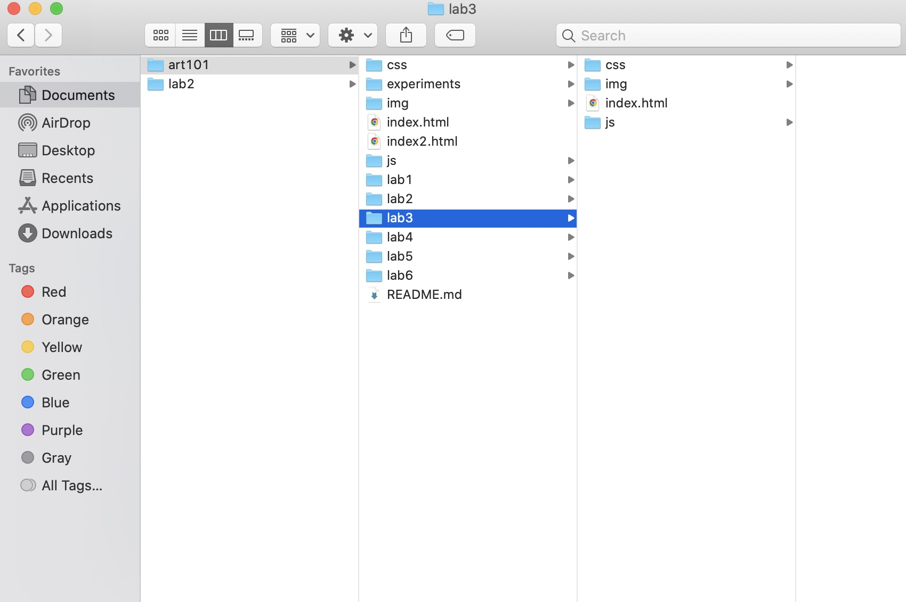
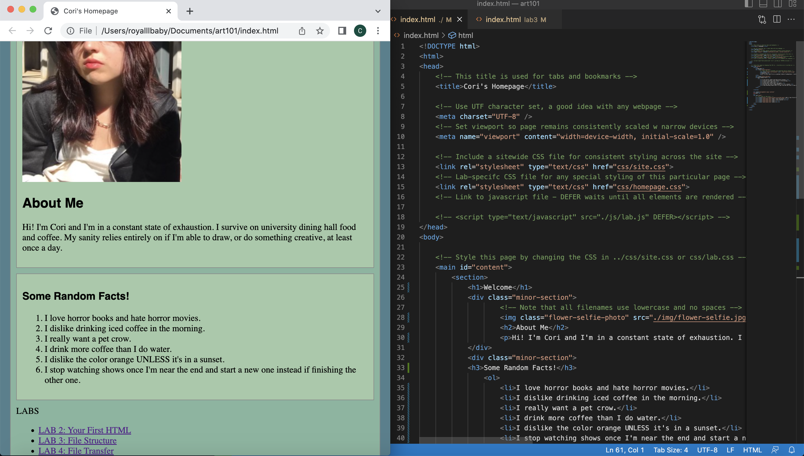

Lab 3 - File Structures
The subject of this lab was to create and organize local file structures on my computer and to add index.html files.
Challenge
While this lab was straightforward and not very difficult to complete, I find it a bit challenging navigating my way through all of the files and different components of VSCode.
Problems
A problem that arose during this assignment was linking the html files on our homepages. However, after extensive Googling and brainstorming, we managed to find a solution.
Reflection
Since we're both beginners when it comes to coding, we felt very accomplished after completing this assignment. Despite our struggles, we worked together to find and explore different solutions through trial and error.
Results
Here is a screenshot of my lab 3 file structure.
Here is a screenshot of my html source code and the index html in my browser.
